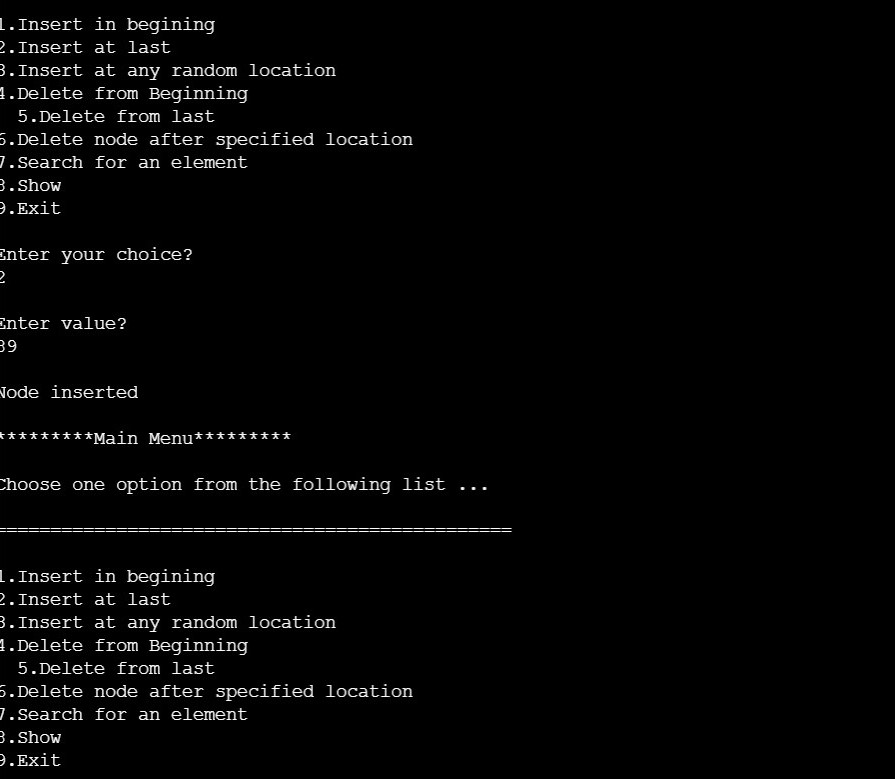

ALGORITHM
Operations on Single Linked List
The following operations are performed on a Single Linked List
Insertion
Deletion
Display
Before we implement actual operations, first we need to set up an empty list. First, perform the following steps before implementing actual operations.
Step 1 - Include all the header files which are used in the program.
Step 2 - Declare all the user defined functions.
Step 3 - Define a Node structure with two members data and next
Step 4 - Define a Node pointer 'head' and set it to NULL.
Step 5 - Implement the main method by displaying operations menu and make suitable function calls in the main method to perform user selected operation.
Insertion
In a single linked list, the insertion operation can be performed in three ways. They are as follows...
Inserting At Beginning of the list
Inserting At End of the list
Inserting At Specific location in the list
Inserting At Beginning of the list
We can use the following steps to insert a new node at beginning of the single linked list...
Step 1 - Create a newNode with given value.
Step 2 - Check whether list is Empty (head == NULL)
Step 3 - If it is Empty then, set newNode→next = NULL and head = newNode.
Step 4 - If it is Not Empty then, set newNode→next = head and head = newNode.
Inserting At End of the list
We can use the following steps to insert a new node at end of the single linked list...
Step 1 - Create a newNode with given value and newNode → next as NULL.
Step 2 - Check whether list is Empty (head == NULL).
Step 3 - If it is Empty then, set head = newNode.
Step 4 - If it is Not Empty then, define a node pointer temp and initialize with head.
Step 5 - Keep moving the temp to its next node until it reaches to the last node in the list (until temp → next is equal to NULL).
Step 6 - Set temp → next = newNode.
Inserting At Specific location in the list (After a Node)
We can use the following steps to insert a new node after a node in the single linked list...
Step 1 - Create a newNode with given value.
Step 2 - Check whether list is Empty (head == NULL)
Step 3 - If it is Empty then, set newNode → next = NULL and head = newNode.
Step 4 - If it is Not Empty then, define a node pointer temp and initialize with head.
Step 5 - Keep moving the temp to its next node until it reaches to the node after which we want to insert the newNode (until temp1 → data is equal to location, here location is the node value after which we want to insert the newNode).
Step 6 - Every time check whether temp is reached to last node or not. If it is reached to last node then display 'Given node is not found in the list!!! Insertion not possible!!!' and terminate the function. Otherwise move the temp to next node.
Step 7 - Finally, Set 'newNode → next = temp → next' and 'temp → next = newNode'
Deletion
In a single linked list, the deletion operation can be performed in three ways. They are as follows...
Deleting from Beginning of the list
Deleting from End of the list
Deleting a Specific Node
Deleting from Beginning of the list
We can use the following steps to delete a node from beginning of the single linked list...
Step 1 - Check whether list is Empty (head == NULL)
Step 2 - If it is Empty then, display 'List is Empty!!! Deletion is not possible' and terminate the function.
Step 3 - If it is Not Empty then, define a Node pointer 'temp' and initialize with head.
Step 4 - Check whether list is having only one node (temp → next == NULL)
Step 5 - If it is TRUE then set head = NULL and delete temp (Setting Empty list conditions)
Step 6 - If it is FALSE then set head = temp → next, and delete temp.
Deleting from End of the list
We can use the following steps to delete a node from end of the single linked list...
Step 1 - Check whether list is Empty (head == NULL)
Step 2 - If it is Empty then, display 'List is Empty!!! Deletion is not possible' and terminate the function.
Step 3 - If it is Not Empty then, define two Node pointers 'temp1' and 'temp2' and initialize 'temp1' with head.
Step 4 - Check whether list has only one Node (temp1 → next == NULL)
Step 5 - If it is TRUE. Then, set head = NULL and delete temp1. And terminate the function. (Setting Empty list condition)
Step 6 - If it is FALSE. Then, set 'temp2 = temp1 ' and move temp1 to its next node. Repeat the same until it reaches to the last node in the list. (until temp1 → next == NULL)
Step 7 - Finally, Set temp2 → next = NULL and delete temp1.
Deleting a Specific Node from the list
We can use the following steps to delete a specific node from the single linked list...
Step 1 - Check whether list is Empty (head == NULL)
Step 2 - If it is Empty then, display 'List is Empty!!! Deletion is not possible' and terminate the function.
Step 3 - If it is Not Empty then, define two Node pointers 'temp1' and 'temp2' and initialize 'temp1' with head.
Step 4 - Keep moving the temp1 until it reaches to the exact node to be deleted or to the last node. And every time set 'temp2 = temp1' before moving the 'temp1' to its next node.
Step 5 - If it is reached to the last node then display 'Given node not found in the list! Deletion not possible!!!'. And terminate the function.
Step 6 - If it is reached to the exact node which we want to delete, then check whether list is having only one node or not
Step 7 - If list has only one node and that is the node to be deleted, then set head = NULL and delete temp1 (free(temp1)).
Step 8 - If list contains multiple nodes, then check whether temp1 is the first node in the list (temp1 == head).
Step 9 - If temp1 is the first node then move the head to the next node (head = head → next) and delete temp1.
Step 10 - If temp1 is not first node then check whether it is last node in the list (temp1 → next == NULL).
Step 11 - If temp1 is last node then set temp2 → next = NULL and delete temp1 (free(temp1)).
Step 12 - If temp1 is not first node and not last node then set temp2 → next = temp1 → next and delete temp1 (free(temp1)).
Displaying a Single Linked List
We can use the following steps to display the elements of a single linked list...
Step 1 - Check whether list is Empty (head == NULL)
Step 2 - If it is Empty then, display 'List is Empty!!!' and terminate the function.
Step 3 - If it is Not Empty then, define a Node pointer 'temp' and initialize with head.
Step 4 - Keep displaying temp → data with an arrow (--->) until temp reaches to the last node
Step 5 - Finally display temp → data with arrow pointing to NULL (temp → data ---> NULL).
CODE
#include<stdio.h>
#include<stdlib.h>
struct node
{
int data;
struct node *next;
};
struct node *head;
void beginsert ();
void lastinsert ();
void randominsert();
void begin_delete();
void last_delete();
void random_delete();
void display();
void search();
void main ()
{
int choice =0;
while(choice != 9)
{
printf("\n\n*********Main Menu*********\n");
printf("\nChoose one option from the following list ...\n");
printf("\n===============================================\n");
printf("\n1.Insert in begining\n2.Insert at last\n3.Insert at any random location\n4.Delete from Beginning\n
5.Delete from last\n6.Delete node after specified location\n7.Search for an element\n8.Show\n9.Exit\n");
printf("\nEnter your choice?\n");
scanf("\n%d",&choice);
switch(choice)
{
case 1:
beginsert();
break;
case 2:
lastinsert();
break;
case 3:
randominsert();
break;
case 4:
begin_delete();
break;
case 5:
last_delete();
break;
case 6:
random_delete();
break;
case 7:
search();
break;
case 8:
display();
break;
case 9:
exit(0);
break;
default:
printf("Please enter valid choice..");
}
}
}
void beginsert()
{
struct node *ptr;
int item;
ptr = (struct node *) malloc(sizeof(struct node *));
if(ptr == NULL)
{
printf("\nOVERFLOW");
}
else
{
printf("\nEnter value\n");
scanf("%d",&item);
ptr->data = item;
ptr->next = head;
head = ptr;
printf("\nNode inserted");
}
}
void lastinsert()
{
struct node *ptr,*temp;
int item;
ptr = (struct node*)malloc(sizeof(struct node));
if(ptr == NULL)
{
printf("\nOVERFLOW");
}
else
{
printf("\nEnter value?\n");
scanf("%d",&item);
ptr->data = item;
if(head == NULL)
{
ptr -> next = NULL;
head = ptr;
printf("\nNode inserted");
}
else
{
temp = head;
while (temp -> next != NULL)
{
temp = temp -> next;
}
temp->next = ptr;
ptr->next = NULL;
printf("\nNode inserted");
}
}
}
void randominsert()
{
int i,loc,item;
struct node *ptr, *temp;
ptr = (struct node *) malloc (sizeof(struct node));
if(ptr == NULL)
{
printf("\nOVERFLOW");
}
else
{
printf("\nEnter element value");
scanf("%d",&item);
ptr->data = item;
printf("\nEnter the location after which you want to insert ");
scanf("\n%d",&loc);
temp=head;
for(i=0;i< loc;i++)
{
temp = temp->next;
if(temp == NULL)
{
printf("\ncan't insert\n");
return;
}
}
ptr ->next = temp ->next;
temp ->next = ptr;
printf("\nNode inserted");
}
}
void begin_delete()
{
struct node *ptr;
if(head == NULL)
{
printf("\nList is empty\n");
}
else
{
ptr = head;
head = ptr->next;
free(ptr);
printf("\nNode deleted from the begining ...\n");
}
}
void last_delete()
{
struct node *ptr,*ptr1;
if(head == NULL)
{
printf("\nlist is empty");
}
else if(head -> next == NULL)
{
head = NULL;
free(head);
printf("\nOnly node of the list deleted ...\n");
}
else
{
ptr = head;
while(ptr->next != NULL)
{
ptr1 = ptr;
ptr = ptr ->next;
}
ptr1->next = NULL;
free(ptr);
printf("\nDeleted Node from the last ...\n");
}
}
void random_delete()
{
struct node *ptr,*ptr1;
int loc,i;
printf("\n Enter the location of the node after which you want to perform deletion \n");
scanf("%d",&loc);
ptr=head;
for(i=0;i< loc;i++)
{
ptr1 = ptr;
ptr = ptr->next;
if(ptr == NULL)
{
printf("\nCan't delete");
return;
}
}
ptr1 ->next = ptr ->next;
free(ptr);
printf("\nDeleted node %d ",loc+1);
}
void search()
{
struct node *ptr;
int item,i=0,flag;
ptr = head;
if(ptr == NULL)
{
printf("\nEmpty List\n");
}
else
{
printf("\nEnter item which you want to search?\n");
scanf("%d",&item);
while (ptr!=NULL)
{
if(ptr->data == item)
{
printf("item found at location %d ",i+1);
flag=0;
}
else
{
flag=1;
}
i++;
ptr = ptr -> next;
}
if(flag==1)
{
printf("Item not found\n");
}
}
}
void display()
{
struct node *ptr;
ptr = head;
if(ptr == NULL)
{
printf("Nothing to print");
}
else
{
printf("\nprinting values . . . . .\n");
while (ptr!=NULL)
{
printf("\n%d",ptr->data);
ptr = ptr -> next;
}
}
}
EXPLANATION
TIME COMPLEXITY
Indexing - O(n)
Insertion - O(1)
Search - O(n)
Deletion - O(1)
OUTPUT
